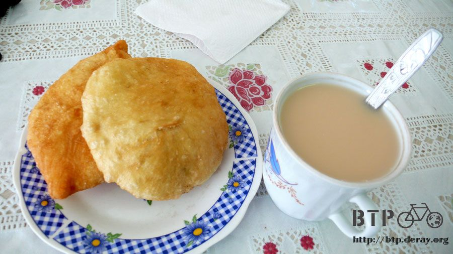

盧布沒有
睡覺的角度正好可以看見這個圍籬的唯一入口，要是有人靠近就能馬上發現，早上六點多迷迷糊糊、半夢半醒之間聽到清晰的腳步聲。
已經近到在耳邊了，如果是人的話那他現在正盯著我睡覺，睜開眼睛一看只是一條大乳牛走進來吃草，鬆了一大口氣。
既然醒了那就不賴床，快速的穿上保暖長袖衣物，以免被想叮咬我一整個晚上都不能得逞的蚊蟲飽餐一頓。
收好露營裝備之後將小多牽到餐廳旁邊，在同樣的黃色大水桶旁用接近冰凍的水洗臉、刷牙、擦身體。
等等打算在餐廳裡吃過熱騰騰的早餐然後再出發，這就是二十四小時經營的好處，想吃隨時就有得吃。
夜裡睡得很不好，眼睛腫腫的，精神也很不集中，我需要熱咖啡來喚醒靈魂。
走到餐廳門口，鐵門深鎖，靠近試著用推的或是用拉的都打不開，真奇怪，不是說二十四小時營業嗎？
在門口坐到七點，都還沒有開門，放棄了在這邊吃早餐的計畫，趁著涼快上路吧。
俄羅斯夏天的日夜溫差真的很大，每天夜晚我都像是睡在冰庫，在冬天起床，在夏天騎車，不是冷得全身發抖，就是熱的直冒汗，衣服的穿著很難拿捏。
出發十公里之後就看到一間旅館，這個住宿情報是昨天用餐的時候老闆娘就主動跟我說的。
十公里並不是多遠的距離，就算天已經黑了還是可以騎到，但昨天寧可露營也不想住旅館，不知道自己在堅持什麼？
也許我一直都在堅持些什麼，只是自己沒發現罷了。
看著這間旅館的招牌，傻笑一下，今天又可以將省下的住宿費拿來吃些美味的東西了。
往前騎一個小時的車之後進入城市，規模大到會讓我心中期盼能在這邊找到網路。
眼光一望大致上就是加油站、餐廳、修車廠這樣的路邊集體經營組合，網路要從路邊就找到好像不太容易，進到市區亂繞也怕只是浪費時間。
在馬路邊看見一棟長方形建築，遠遠的彷彿看見windows的四色標誌，微小的期盼慢慢的擴大，靠過去看發現是賣電腦的，說不定會有網路可以用呢？
牽車進到裡頭，店家大多都是關門的，因為現在才八點出頭而已，還不到營業時間。
看著電腦店的門口貼著一張告示牌，我確定左下角那個字寫的是『網路』，而店裡開門的時間是九點，至少招牌上是這麼寫。
八點多等到九點很快的，想去商店買東西吃當早餐，結果門是鎖的，有其他店家的員工來上班的時候才叫商店開門，營業了五分鐘之後門又繼續深鎖。
趁這短短的五分鐘買了一袋的夾心餅乾、三個牛奶冰淇淋和一盒洗衣粉。
好久沒有洗衣服了，除了頭巾和單車手套這些小東西比較方便洗，其它身上穿的衣服都已經是第三天沒洗。
之前在哈薩克買了一盒洗衣粉，才洗了一次而已就因為整盒放在洗手台忘了拿而被偷走，非常昂貴的洗衣代價。
坐在地上看著小多和商店的門，時間一分一秒的過，九點的時後依然沒有人來開門。
像是商圈管理協會的人看到我坐在這邊，問我想幹嘛？我說在等電腦店開門，要用網路。
他們很好心的幫我打了電話給電腦店的人，然後雙手十指張開，比了一個十，不知道是跟我說十分鐘後就會有人來，還是要等到十點？
可能因為今天是星期六的緣故，所以店家開門的都比較晚吧？
坐在地上眼皮慢慢的就闔了起來，實在是睏到不行，反正在屋子裡很安全，趁機補眠一下。
手錶顯示十點的時候，還是沒有任何動靜，我走去管理協會的辦公室那邊問說今天會營業嗎？他們的回覆是肯定的。
既然這樣，那就繼續等吧，除了等待也沒別的事情可以做，要是現在離開，我今天甚至接下來一個星期都會因為錯過了這次上網的機會而惋惜著。
重新坐回地面，閉上眼睛淺淺的睡著，三到五分鐘就會醒來一次，這樣程度的淺睡眠。
我也想好好的睡上一覺，但是有一個小鬼一直在身邊煩我，問東問西，拿著泰國的旅遊景點問我這個是台灣？
加上他一直在小多身邊繞來繞去，一下走開沒多久又回來，為了顧著他不會亂動，我只好睡睡醒醒的。
又過了一個小時，等到中午十一點，突然有人著拿一串鑰匙走過來，將門打開，迷糊之間我還沒搞清楚這意味著什麼？
一躍起身，拍拍屁股上的灰塵，清醒之後就知道這意味著連接網路的大門已經開啟。
從早上八點多一直等到十一點，要是這邊沒有網路可以用的話，我想我真的會捶胸頓足。
這間電腦店是整個商圈最晚開門的，其它每個看到我的人都已經知道我坐在地上睡覺就是因為要用網路。
拿著電腦進到裡面，我都還沒開口就有人幫我說明來意，插上網路線，連接上網，就這麼簡單的一個步驟，苦等了好久，總是值得。
這次的上網讓我發現哈薩克跟俄羅斯網路的計價方式，並不是依照使用的時間而定，而是依照使用的頻寬來計價。
1MB索價2.5盧布，是便宜還是貴就請各位自己定奪了。
我是在上網完畢之後，對方拿出計算機按了『96X2.5=240』，然後比著電腦螢幕上的流量才知道計費方式。
讓我非常非常的懊惱，因為剛才我看了惡靈古堡五的最新遊戲影片，光是這個影片頻寬就將近60MB。
如果不要那麼愛看的話，上網的價錢就會便宜很多，懊惱也沒有挽回的餘地，我拿過計算機，按了200，試著殺價一下，結果可以。
第一次上網只付了四十盧布，第二次居然要花兩百盧布，只能安慰說這次是用自己的電腦上網，收信什麼的都方便很多，貴一點別放在心上了。
但是這個安慰的作用並不太大，只要一想到上網會這麼貴是因為我看了一段一分多鐘的影片，怎麼想都很心痛，心情也變得很差。
下午一點離開這裡，帶著失血的荷包和淌血的心情，已經是午餐時間了，肚子餓但是想吃簡單一點，把剛才的花費彌補回來。
簡單點了兩個麵包和一杯熱奶茶，麵包的餡料是馬鈴薯泥跟肉餡，味道還真不錯，價錢也便宜。

吃光之後還是餓，店裡能吃的東西只要是寫在菜單上的都不便宜，挑了一碗泡麵請店家幫忙泡，繼續填飽肚子。
吃泡麵的時候進來一組客人，在門廊打量著小多，還來拿起太陽眼鏡來試戴，我急忙放下手中的泡麵出去阻止。
說是阻止其實也是禮貌性的將眼鏡拿回來，笑笑的給他們詢問關於旅行的事情。
填飽肚子之後剛才亂花網路費用的事情已經沒那麼在意，臨走前又被那一組客人叫住，講了幾句話，都聽不懂，我說要上路騎車，時間差不多了。
他們還是繼續講了一些話，有些單字很熟悉，啤酒、可樂，到底在跟我講什麼？
原來是問我想喝什麼，發現我聽不懂，他們就直接買了一大盒的果汁送給我，這下總算讓我明白他們的好意，也幸虧剛才跑出去拿回眼鏡的時候沒有失禮。

接過果汁，心裡有點欣慰，世間真是處處有溫情，不論身在哪個國家都一樣。
戴上手套和帽子，轉過身要離開的時候他們又從後頭叫住了我，『等等～先別走』，然後又拿了一堆巧克力當禮物。
這時候應該不只是欣慰而已，說是感動也不為過了。
帶著果汁和巧克力出發，這兩種都是我自己會花錢買的東西，真是送禮送到心坎裡。
騎了一個小時左右，後輪感覺有異樣的漂移感，停下車檢查，看著軟軟的車胎，原來是爆胎了，這種感覺好熟悉呀。
彷彿昨天才爆胎似的，等等，不是彷彿，是真的昨天才爆胎，今天又爆了一次。
要嘛就是隔兩個月不曾爆胎，要嘛就是兩天爆胎兩次，幸好內胎帶得夠多，而且此時的我很累，想休息又沒有藉口停車。
爆胎的時候正好可以讓我邊換內胎邊喘口氣，可惜這次沒有路邊的公車等候站，就在路旁的田間小徑換起了內胎。
換掉這一條之後，包包裡就有六條被刺破的內胎，和一條全新的內胎，被刺破的找時間補一補還是跟新的一樣，有空再來處理。
愉快的換內胎時間半個小時就過去了，休息時間同時宣告結束，再度跨上小多往西邊騎。
評估著為什麼今天騎車會比較無力？
逆風，沒錯，到了俄羅斯之後吹的都是由西往東的逆風，這一千多公里的路都要頂著風前進。
爬坡，這也是疲憊的原因，一路上都是起起伏伏的山路，，幸好路況不錯減輕了騎車的辛苦。
愛睏，我想這才是真正的主因，我好想要好好的睡上一覺呀，因為露營所以都要等到四周暗下來才比較能心安的睡著。
這就表示著在午夜十二點之前我都是警戒的狀態，而入睡之後也要提防可疑的動靜，睡的不安穩，自然就無法恢復累積的疲勞。
騎車快要睡著的時候路邊停了一輛車，只看到男性的駕駛招手叫我停車，依安全考量，只微笑點頭打招呼，並沒有停下來。
騎經過的時候，心裡還要默默期盼著對方不要開車又跟上來，我根本不知道對方想幹嘛？
可是對方還是開車又從後面跟了上來，這次換副駕駛座的人招手叫我停下來，轉頭一看是個媽媽，車裡還有兩個小孩。
這樣的家庭組合應該不是壞人要打劫，他們只是想和我聊個天，小孩對我超有興趣，沒必要搞得自己緊張兮兮。

施工中的路道，一般都會掛著請繞道行駛的牌子，這邊都是掛往莫斯科的車輛請拐彎，好像繞過這裡就會抵達莫斯科似的。
這段路比較荒涼一點，下午七點的時後距離下一個城鎮還有四十公里，在逆風的情況下估計大概要晚上十點之後才能騎到。
肚子不餓，口也不渴，並不一定要騎到城市才能休息，騎車的時候我都在搜尋著適合露營的場所，準備隨時喊停。
但就是荒涼得除了田地之外沒別的東西，天空的雲層很厚，晚上下雨的機會很高，今天不想再賭一次夜晚的天氣，就算要露營也要找有屋頂的地方。
路上經過一棟廢棄的屋子，外觀看起來還可以，門有點損毀，試著打開但是鎖得好好的 。
暴力的用腳踹了兩下絲毫聞風不動，要澄清一下，門上的破洞不是我踹出來的，是本來就破掉。
因為太陽下山的很晚，說是晚上十點大概是台灣下午七點左右的亮度，
但手錶顯示和生理時鐘『確‧確‧實‧實』都是晚上十點，已經該躺平睡覺而不是騎車前進了。
太陽漸漸下山的時候，發現城鎮的影子，這邊也是一個大城市，搞不清楚是建在湖邊還是河邊？
快要看不見太陽之前終於回到有人煙的地方，居然真的讓我從下午七點又騎了四十公里到這邊。
大馬路的盡頭是一間複合式經營的店家，旅館、餐廳、酒吧、修車廠什麼都有，在這邊右轉的話就會進入大城市，左轉的話就是繼續往莫斯科騎。
先靠過去問了價錢，旅館的老婆婆很慈祥，也很友善，對待我像呵護自己的孫子一樣，可是我還是很在乎價錢。
她只一直跟我介紹這邊可以淋浴、這裡是我的房間、單車可以放裡面沒關係，旁邊就是吃飯的餐廳這些事項。
說實話我真的很想住在這裡，洗個舒服的熱水澡，躺在鬆軟又有暖氣的房間裡，隔天睡到自然醒。
等老太太在筆記本上寫著六百元的時候，上述的期待就破滅了，我攤攤手說『盧布沒有』。
老太太重複了一次我的話，『盧布沒有』，沒有錢她也沒辦法，我還是很謝謝她的好意。
跑去隔壁的餐廳買晚餐，簡單的採購兩條熱狗麵包和一個甜的麵包，外加一大瓶汽水，晚餐補給完畢就不怕餓肚子睡覺了。
帶著吃的回到旅館門口，被老太太看到，剛剛才說自己『盧布沒有』，現在卻拎著汽水，似乎有點矛盾。
我問說可不可以在旅館旁邊堆著木頭的地方露營，那邊有屋頂，而且木頭堆可以擋住我不被外面的人看到。
心裡評估著這地點選得還真是不錯，完全沒想到對方的回應是如何，我想說她人那麼好，百分之百會答應，慈祥的老太太說：不行。
這個回答讓我有點訝異，居然是不行呀，嘴裡還咀嚼著熱狗麵包突然有點難以吞嚥，糗了～天快黑了，這邊不能住那就快點找別的地方落腳。
汽水都還沒開瓶喝，跨上小多左轉往莫斯科的方向騎而非往城市的方向。
一公里之外有一個公車等候站，這邊是大馬路，車道寬而且車速都很快，很少有人步行走過。
公車站的造型左右兩邊都是半圓弧形，飛快的駕駛開過的時候不太會注意到裡面有人在睡覺。
看起來雖然有點空曠，但卻又不容易被發現，心裡抱著僥倖的心態決定住在這裡一晚上。
昨天是隱蔽性高，但是沒有屋頂，而且蚊蟲很多；今天是空曠，但是有屋頂還能擋風，環境也比較衛生，各有各的優點。
鐵製的椅子入夜後極度的冰冷，捲曲著身體裹著睡袋和帳篷，路過的車輛大燈刺眼的一閃而過，路面震動數秒，然後又恢復夜間的寂靜。
真的沒有任何人走進這個公車等候站，也沒有任何車輛停下來參觀我睡覺，盧布沒有也沒關係，旅行還持續進行著，而且一天比一天更耐人尋味。
要猜我明天會睡在什麼地方嗎？
繼續閱讀：7.29 又不是在修行
俄羅斯-盧布－ 1：1.3 台幣
7.28 |
總計：368.5元 |
商店洗衣粉、冰淇淋、夾心餅乾59.5元、網路200元、午餐馬鈴薯麵包、肉餡麵包、熱奶茶、泡麵41元、晚餐熱狗麵包、甜麵包、可樂68元 |
|